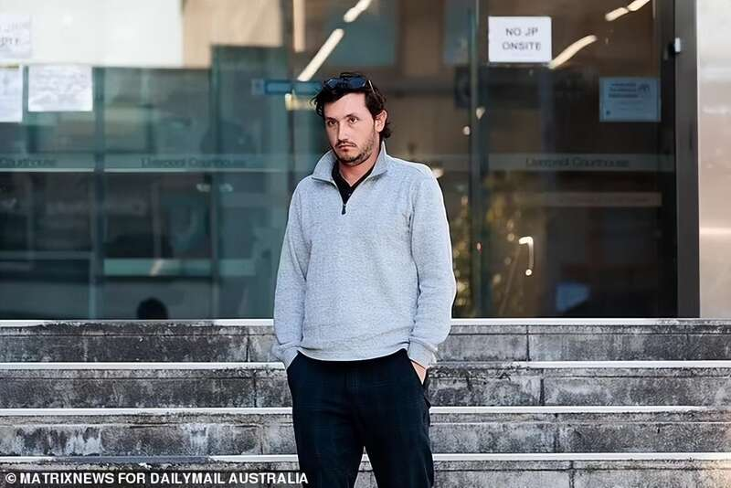
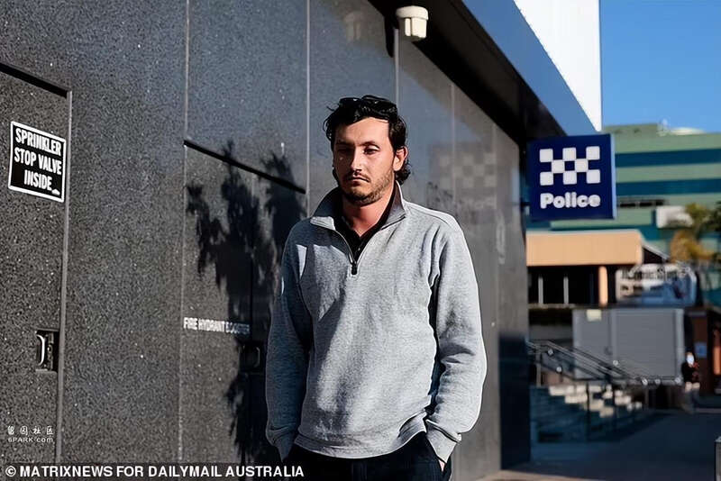
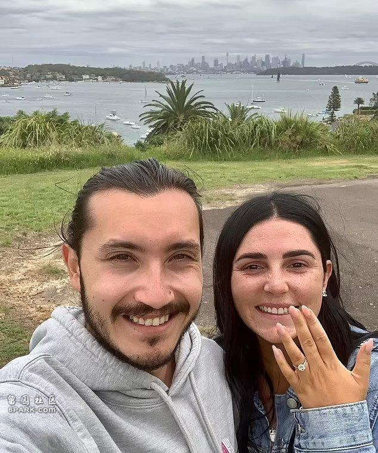

泰拉·李·布雷利 (Tayla Lee Brailey)，是一名生活在澳大利亚悉尼的体育老师，在悉尼西南部的一所高中任教。
不过就在上个月末，这位现年30岁的女教师在学校里被警方逮捕了，她被指控犯有两项罪行，即和未成年人有X接触以及在未经对方许可的情况下强行发生不当行为。
据称，受害者是一名17岁的需要特殊照顾的男生，而泰拉不仅对那位男生实施了侵犯行为，还对其发出了警告，“不许告诉任何人。”
当地时间8月7日，泰拉被看到穿着灰色的连帽衫，从安珀·劳雷尔惩教中心走了出来，她已经获得了保释，之后她将在家等待第二次庭审的到来，今年的10月2日她将出现在法庭中，而不像第一次庭审那样，她是在惩教中心里通过视频连线的方式出庭的。
从泰拉把自己捂得严严实实的样子看，她是感到羞愧的，但似乎在实施犯罪行为的时候并没有想到这些。

而更加感到恼怒和沮丧的，应该是泰拉的新婚丈夫以赛亚（Isaiah）了。
据报道称，以赛亚当天出现在了位于悉尼西南部的利物浦地方法院，观看他的妻子出庭受审。虽说佩戴着太阳镜，但以赛亚并没有用其遮住眼睛，似乎并不畏惧被聚光灯对准，但从他那一言不发的状态看，心情是相当不好了。
显然，妻子泰拉所犯下的罪行，真是让他这位当丈夫的五味杂陈。

以赛亚和泰拉是去年9月结婚的，还不到一年也算是新婚了。
据悉，他们是在2021年2月订婚的，之后一直相处融洽，估计以赛亚不会想到自己会因为妻子犯下如此罪行而走进法院。

在庭审中，通过视频出现的泰拉一直静静地坐着，眼睛盯着地面，而她的律师则是为她提出保释申请。反对保释的检方辩称，针对泰拉的指控“很有力”，因为她已经向警方供认了罪行。检方告诉法官说，她应该被拘留，以防止她干扰证人。
检察官还告诉法庭，布雷利承认除了所谓的受害者之外，还在社交媒体上与另外两名学生交谈过；其中一项指控有监控视频的录像为证，此外还在她的手机和所谓的受害者的手机上都发现了交流证据。
检方最初希望能够保密泰拉的姓名、学校所在地或是任何证人的证词，以防止干扰正在进行的警方调查，但该申请遭到了反对，据称警方已经在一份媒体声明中公开了关键细节，继续隐瞒这些信息已经没有必要了。
泰拉的父母当天也出现在了法庭，他们被描述为情绪非常激动，在法庭上紧紧地依靠着彼此，似乎想要借此寻求一些安慰。
而在走出法院大楼后，他们被看到拥抱了女婿。
在泰拉的保释获得法官批准后，这对同样沮丧的父母去惩教所接他们的女儿了，拒绝回答任何的问题。按照法官的裁定，泰拉在保释期间必须留在父母的家中，只有父亲或母亲陪同时，才可以离开家。此外她还必须交出护照，遵守宵禁，并且不得靠近学校。
教育部门证实，泰拉已被停职，且无薪，她此前所在的学校正在为教职员工和学生提供心理支持。